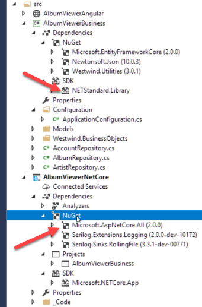
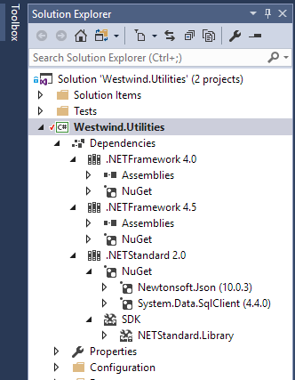
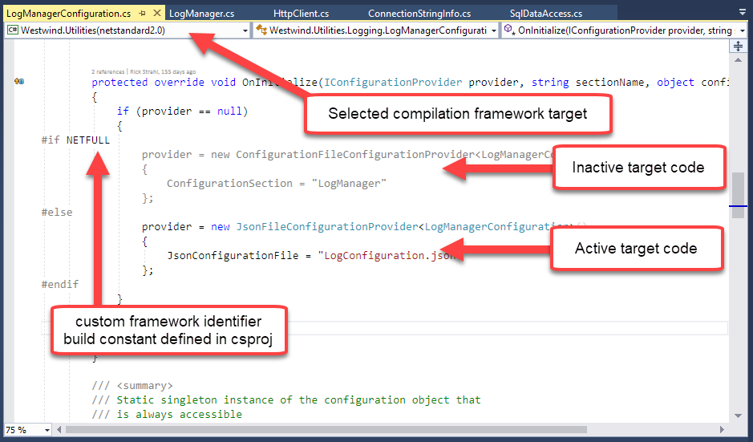
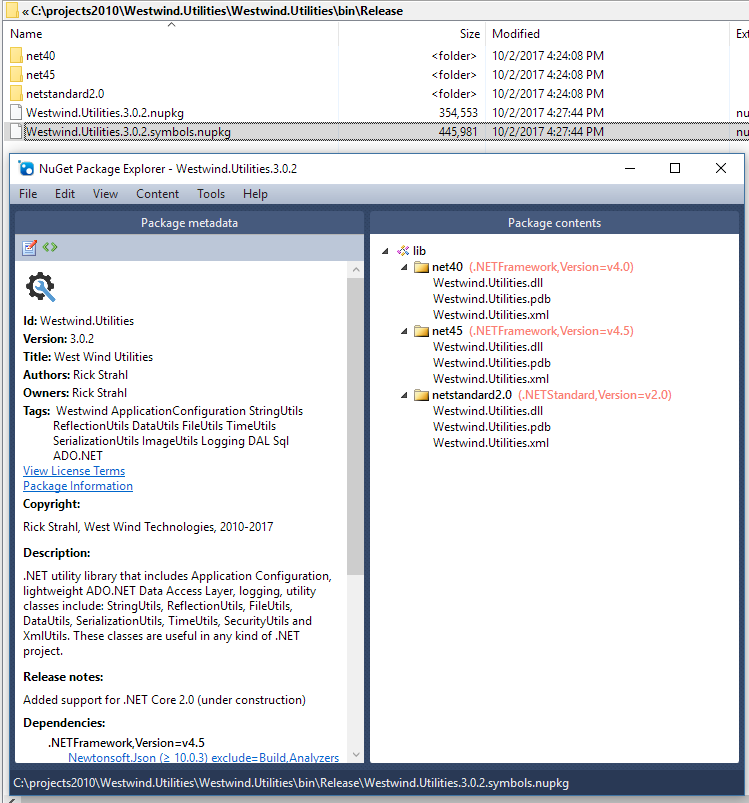
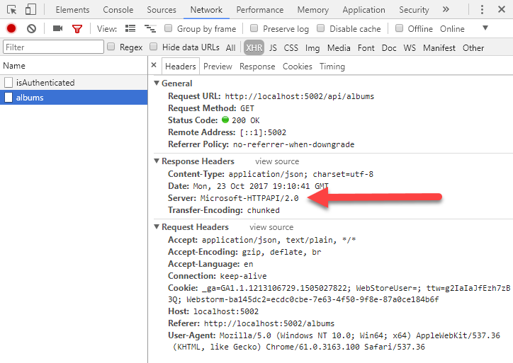
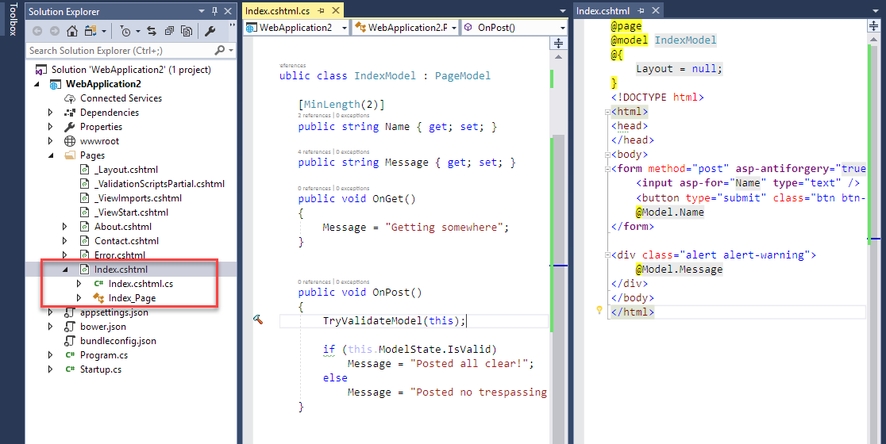

this post created and published with
Markdown Monster.
this post created and published with
Markdown Monster.
Many of us have been patiently waiting through the long and windy road that has been the inception of the .NET Core and ASP.NET Core platforms. After a very rocky 1.0 and set of 1.x releases, version 2.0 of the new .NET frameworks and tooling have finally arrived a few weeks back. You know the saying: "Don't use any 1.x product from Microsoft", and this is probably more true than ever with .NET Core and ASP.NET Core. The initial releases, while technically functional and powerful, were largely under-featured and sported very inconsistent and ever changing tooling. Using the 1.x (and pre-release) versions involved quite a bit of pain and struggle just to keep up with all the developments along the way.
Version 2.0 of .NET Standard, .NET Core and ASP.NET Core improve the situation considerably by significantly refactoring the core feature set of .NET Core, without compromising all of the major improvements that the new framework has brought in Version 1.
The brunt of the changes involve bringing back APIs that existed in full framework to make .NET Core 2.0 and .NET Standard 2.0 more backwards compatible with full framework. It's now vastly easier to move existing full framework code to .NET Core/Standard 2.0. It's hard to understate how important that step is, as 1.x simply in many ways felt hobbled by missing API and sub-features that made it difficult to move existing code and libraries to .NET Core/Standard. Bringing the API breadth back to close compatibility resets the expectation of what amounts to a functional set of .NET features that most of us have come to expect of .NET.
These subtle, but significant improvements make the overall experience of .NET Core and ASP.NET Core much more approachable especially when coming from previous versions of .NET. More importantly it should also make it much easier for third party providers to move their components to .NET Core so that the support eco-system for .NET Core applications doesn't feel like a backwater as it did during the 1.x days.
These changes are as welcome as they were necessary and in my experience with the 2.0 wave of tools has been very positive. I've been able to move two of my most popular libraries to .NET Core 2.0 with relatively little effort - something that would have been unthinkable with the 1.x versions. The overall feature breadth is pretty close to full framework, minus the obvious Windows specific feature set.
ASP.NET Core 2.0 also has many welcome improvements including a simplified configuration setup that provides sensible defaults, so you don't have to write the same obvious startup code over and over. There are also many new small enhancements as well as a major new of RazorPages which bring controller-less Razor pages to ASP.NET Core.
Overall 2.0 is a massive upgrade in functionality, that brings back features that realistically should have been there from the start.
But it's not all unicorns and rainbows - there are still many issues that need to be addressed moving forward. First and foremost is that the new SDK style project tooling leaves a lot to be desired with slow compilation, slow test tooling, and buggy tool support for multi-targeted projects in Visual Studio. Visual Studio in general seems to have taken a big step back in stability in recent updates when it comes to .NET Core projects.
Overall the improvements in this 2.0 release vastly outweigh the relatively few - if not insignificant - problems, that still need to be addressed. The outstanding issues are well known and on the board for fixes in the hopefully not so distant future. Most of these relate to tooling and tooling performance rather than the frameworks themselves. While inconvenient, these tooling shortcomings are not what I would consider show stoppers, but mostly nuisances that are likely to be addressed soon enough.
To be clear where I stand:
.NET Core 2.0 and ASP.NET 2.0 is my demarcation line, my line in the sand, where I get my butt off my hands and finally jump in.
The 2.0 release feels like a good jumping-in point, to dig in and start building real applications with - a feeling that I never had with the 1.x releases. Sure I dabbled and worked through my samples and learned but with 1.x I never felt like I'd get through a project without getting stuck on some missing piece of kit.
For me 2.0 strikes the right balance of new features, performance and platform options that I actually want to use, without giving up many of the conveniences that earlier versions of .NET offered. The 2.0 features no longer feel like a compromise between the old and new but a way forward to new features and functionality that is actually useful and easy to work with in ways that you would expect to on the .NET platform. Plus many of the hot shiny new features in ASP.NET Core in particular. There's lots to like and always has been in ASP.NET Core.
Let's take a look at some of the most important details of what's changed.
What is .NET Standard?
Not sure what .NET Standard is and it relates to .NET Core and other .NET frameworks? Check out my previous blog post that explains what .NET Standard is, why it's a useful new concept and how you can use it:
##AD##
The first and probably most significant improvement in the 2.0 releases is that .NET Standard and .NET Core 2.0 bring back many of the APIs we've been using since the beginnings of .NET in the full framework, that were not supported initially by .NET Core 1.x.
When .NET Core 1.x came out they were largely touted as trimmed down, high performance versions of the full .NET Framework. As part of that effort there was a lot of focus on trimming the fat and providing only core APIs as part of .NET Core and .NET Standard. The bulk of the .NET Base Class Library was also broken up into a huge number of small hyper-focused packages.
All this resulted in a much smaller framework, but unfortunately also brought a few problems:
With .NET Core 1.0 many common NET Framework APIs were either not available or buried under different API interfaces that often were missing critical functionality. Not only was it hard to find stuff that was under previously well known APIs, but a lot of functionality that was taken for granted (Reflection, Data APIs, XML for example) was refactored down to near un-usability.
.NET Core 2.0 - and more importantly .NET Standard 2.0 - add back a ton of functionality that was previously cut from .NET Core/Standard, bringing back a large swath of functionality that existed in full framework .NET. In 1.x it was really difficult to port existing code. The feature footprint with .NET Core 2.0 is drastically improved (~150% of APIs added) and compatibility with existing full framework functionality is preserved for a much larger percentage of code.
In real terms this means that it's much easier now to port existing full framework code to .NET Standard or .NET Core and have it run with no or only minor changes.
Case in point: I took one of my 15 year old general purpose libraries - Westwind.Utilities which contains a boat load of varied utility classes that touch a wide variety of .NET features - and I was able to re-target the library to .NET Standard as well as .NET 4.5. More than 95% of the library could migrate without changes and only a few small features needed some tweaks (encryption, database) and a few features had to be cut out (low level AppDomain management and Drawing features). Given that this library was such an unusual hodgepodge of features, more single-focused libaries will fare even better in terms of conversions. If you're not using a few of the APIs that have been cut or only minimally implemented, chances are porting to .NET Standard will require few or even no changes.
You can read more about what was involved in this process my Multi-Targeting and Porting a .NET Library to .NET Core 2.0 post.
One of the key bullet points Microsoft touted with .NET Core is that you can run side by side installations of .NET Core. You can build an application and ship all the runtime files and dependencies in a local folder - including all the .NET dependencies as part of your application. The benefit of this is that you can much more easily run applications that require different versions of .NET on the same machine. No more trying to sync up and potentially break applications due to global framework updates. Yay! Right?
Well - you win some, you lose some. With Version 1.x of .NET Core and ASP.Core the side effect was that the .NET Core and ASP.NET frameworks were fragmented into a boatload of tiny, very focused NuGet packages that had to be referenced explicitly in every project. These focused packages are a boon to the framework developers as they allow for nice feature isolation and testing, and the ability to rev versions independently for each component.
But the result of all this micro-refactoring was that you had to add every tiny little micro-refactored NuGet Package/Assembly explicitly to each project. Finding the right packages to include was a big usability problem for application and library developers.
Additionally when you published Web projects all those framework files - plus all runtime runtime dependencies had to be copied to the server with 1.x, making for a huge payload to send up to a server for publishing even for a small HelloWorld application.
In .NET Core 2.0 and ASP.NET 2.0 this is addressed with system wide Framework Meta Packages that can be referenced by an application. These packages are installed using either the SDK install or a 'runtime' installer and can then be referenced from within a project as a single package. So when you reference .NET Core App 2.0 in a project, it automatically includes a reference to the .NET Core App 2.0 meta package. Likewise if you have a class library project that references .NET Standard - that meta package with all the required .NET Framework libraries is automatically referenced. You don't need to add any of the micro-dependencies to your project. The runtimes reference everything in the runtime, so in your code you only need to apply namespaces, but no extra packages.
There's also an ASP.NET Core meta package that provides all of the ASP.NET Core framework references. Each of these meta packages have a very large predefined set of packages that are automatically referenced and available to your project's code.
In your projects this means you can reference .NET Standard in a class library project and get references to all the APIs that are part of .NET Standard with NetStandard.Library reference in the screenshot below. In applications, you can reference Microsoft.NETCoreApp which is essentially a reference to .NET Core 2.0 - here you specifying a very specific instance of runtime for the application. For ASP.NET the Microsoft.AspNetCore.All package brings in all ASP.NET and EntityFramework related references in one simple reference.
Here's an example of a two project solution that has an ASP.NET Core Web app and a .NET Standard targeted business logic project:

Figure 1: Package references are manageable again in V2.0
Notice that the project references look very clean overall - I only explicitly add references to third party NuGet packages - all the system refs comes in automatically via the single meta package. This is even less cluttered than a full framework project which still needed some high level references. Here everything is automatically available for referencing.
This also is nice for tooling that needs to find references (Ctrl-. in VS or Alt-Enter for R#). Because everything is essentially referenced, Visual Studio or Omnisharp can easily find references and namespaces and inject them into your code as using statements.
Nice.
In a way these meta packages feel like classic .NET runtime installs and in an indirect way they are. Microsoft now provides .NET Core and ASP.NET Core runtimes that are installed from the .NET Download site and can either be installed via the plain runtime or the .NET SDK that includes all the compilers and command line tools so you can build and manage a project.
You can install multiple runtimes side by side and they are available to many applications to share. This means the same packages don't have to be installed over and over for each and every application, which makes deployments a heck of a lot leaner than in 1.x applications.
You can still fall back to local packages installed with in the application's output folder and override global installed packages, so now you get the best of all worlds:
In short you now get to have your cake and eat it too, as you get to choose exactly where your runtime files are coming to.
In most cases with 2.0 publishing an application to a Web server is much leaner than in prior versions. Your publish folder and what needs to get sent to the server amounts to just your code plus any explicit third party dependencies you added to the project. You are no longer publishing runtime files to the server.
Here's the publish folder of the Solution shown above:
Figure 2: Published output contains just your code and your explicit dependencies
This means publishing your application is much more lightweight - after the initial runtime installation. It's still possible to deploy full runtimes just as you could in 1.x releases, it just no longer the default and you have to explicitly specify the runtime to publish.
One of the nicest features of 2.0 (actually initially introduced in 1.1) is the new SDK style .csproj Project format. This project format is very lean and easily readable - quite in contrast to the verbose and cryptic older .csproj format.
For example, it's not hard to glean what's going on in this .csproj project file:
<Project Sdk="Microsoft.NET.Sdk.Web">
<PropertyGroup>
<TargetFramework>netcoreapp2.0</TargetFramework>
</PropertyGroup>
<ItemGroup>
<PackageReference Include="Microsoft.AspNetCore.All" Version="2.0.0" />
<PackageReference Include="Serilog.Extensions.Logging" Version="2.0.2" />
<PackageReference Include="Serilog.Sinks.RollingFile" Version="3.3.0" />
</ItemGroup>
<ItemGroup>
<ProjectReference Include="..\AlbumViewerBusiness\AlbumViewerBusiness.csproj" />
</ItemGroup>
<ItemGroup>
<Content Update="wwwroot\**\*;Areas\**\Views;appsettings.json;albums.js;web.config">
<CopyToPublishDirectory>PreserveNewest</CopyToPublishDirectory>
</Content>
</ItemGroup>
<ItemGroup>
<Compile Remove="logs\**" />
<Content Remove="logs\**" />
<EmbeddedResource Remove="logs\**" />
<None Remove="logs\**" />
</ItemGroup>
<ItemGroup>
<DotNetCliToolReference Include="Microsoft.DotNet.Watcher.Tools" Version="2.0.0" />
</ItemGroup>
<ItemGroup>
<None Update="albums.js">
<CopyToOutputDirectory>PreserveNewest</CopyToOutputDirectory>
</None>
</ItemGroup>
</Project>
Notice that file references are all but gone in the project file - projects now assume all files are included except those you explicitly exclude which drastically reduces the file references in a project. The other benefit here is that you can simply drop files in a folder to become part of a project - you no longer have to add files to a project explicitly.
Compared to the morass that was the old .csproj format this is very clean and lean.
Additionally the new project format supports multi-targeting to multiple .NET framework versions. I've talked a few times about porting existing libraries to .NET Standard, and using the new project format it's quite easy to set up a library to target both .NET 4.5 and .NET Standard for example.
Here's an example of my Westwind.Utilities library that does just that:
<Project Sdk="Microsoft.NET.Sdk">
<PropertyGroup>
<TargetFrameworks>netstandard2.0;net45;net40</TargetFrameworks>
<RuntimeIdentifiers>win7-x86;win7-x64</RuntimeIdentifiers>
<Authors>Rick Strahl</Authors>
<Version>3.0.2</Version>
<AssemblyVersion>3.0.2.0</AssemblyVersion>
<FileVersion>3.0.2.0</FileVersion>
<PackageId>Westwind.Utilities</PackageId>
<RootNamespace>Westwind.Utilities</RootNamespace>
...Nuget info block omitted
</PropertyGroup>
<PropertyGroup Condition="'$(Configuration)'=='Debug'">
<DefineConstants>TRACE;DEBUG;</DefineConstants>
</PropertyGroup>
<PropertyGroup Condition=" '$(Configuration)' == 'Release' ">
<NoWarn>$(NoWarn);CS1591;CS1572;CS1573</NoWarn>
<GenerateDocumentationFile>true</GenerateDocumentationFile>
<IncludeSymbols>true</IncludeSymbols>
<DefineConstants>RELEASE</DefineConstants>
</PropertyGroup>
<ItemGroup>
<PackageReference Include="Newtonsoft.Json" Version="10.0.3" />
</ItemGroup>
<ItemGroup Condition=" '$(TargetFramework)' == 'netstandard2.0'">
<PackageReference Include="System.Data.SqlClient" Version="4.4.0" />
</ItemGroup>
<PropertyGroup Condition=" '$(TargetFramework)' == 'netstandard2.0'">
<DefineConstants>NETCORE;NETSTANDARD;NETSTANDARD2_0</DefineConstants>
</PropertyGroup>
<ItemGroup Condition=" '$(TargetFramework)' == 'net45' ">
<Reference Include="mscorlib" />
<Reference Include="System" />
<Reference Include="System.Core" />
<Reference Include="Microsoft.CSharp" />
<Reference Include="System.Data" />
<Reference Include="System.Web" />
<Reference Include="System.Drawing" />
<Reference Include="System.Security" />
<Reference Include="System.Xml" />
<Reference Include="System.Configuration" />
</ItemGroup>
<PropertyGroup Condition=" '$(TargetFramework)' == 'net45'">
<DefineConstants>NET45;NETFULL</DefineConstants>
</PropertyGroup>
<ItemGroup Condition=" '$(TargetFramework)' == 'net40' ">
<Reference Include="mscorlib" />
<Reference Include="System" />
<Reference Include="System.Core" />
<Reference Include="Microsoft.CSharp" />
<Reference Include="System.Data" />
<Reference Include="System.Web" />
<Reference Include="System.Drawing" />
<Reference Include="System.Security" />
<Reference Include="System.Xml" />
<Reference Include="System.Configuration" />
</ItemGroup>
<PropertyGroup Condition=" '$(TargetFramework)' == 'net40'">
<DefineConstants>NET40;NETFULL</DefineConstants>
</PropertyGroup>
</Project>
The project defines three framework targets:
<TargetFrameworks>netstandard2.0;net45;net40</TargetFrameworks>
and then uses conditional target framework filtering to add dependencies. Visual Studio can visualize these dependencies for each target as well:

Figure 3 - Multiple targets displayed in Visual Studio
Visual Studio 2017.3+ also has a new Target drop down that lets you select which target is currently used to display code and errors in the environment:

Figure 4 - Active target compiler constants are evaluated in the code editor so code excluded for a given target is low-lighted.
There are other features in Visual Studio that makes it target aware:
When you compile this project, the build system automatically builds output for all three targets which is very nice if you've ever tried to create multi-target projects with the old project system (hint: it sucked!).
It can also create a NuGet Package that wraps up all targets into the pacakge. If you look back at the project file you'll note that the NuGet Properties are now stored as part of the .csproj file.
Here's what the build output from my 3 target project looks like:

Figure 5 - Multi-target projects automagically build for all target platforms and can create a NuGet package.
This, friends, is pretty awesome to me and frankly something that should have been done a long time ago in .NET!
##AD##
Another nice improvement and a sign of growing up is that the ASP.NET Core startup code in 2.0 is a lot more streamlined and there's quite a bit less of it.
The absolute minimal ASP.NET Web application you can build is just a few lines of code:
public static void Main(string[] args)
{
// The simplest thing possible!
WebHost.Start(async (context) =>
{
await context.Response.WriteAsync("Hello World. Time is: " + DateTime.Now);
})
.WaitForShutdown();
}
Notice that this code works without any dependencies whatsoever, and yet has access to an HttpContext instance - there's no configuration or additional setup required, the framework now uses a set of common defaults for bootstrapping an application. Hosting options, configuration, logging and a few other items are automatically set with common defaults, so these features no longer have to be explicitly configured unless you want to change the default behavior.
The code automatically hooks up hosting for Kestrel and IIS, sets the startup folder, allows for host url specification and provides basic configuration features - all without any custom configuration required. All of these things needed to be configured explicitly previously. Now - all of that is optional. Nice!
To be realistic though, if you build a real application that requires configuration, authentication, custom routing, CORS etc. those things still have to be configured and obviously that will add code. But the point is that ASP.NET Core now has a default configuration that out of box lets you get stuff done without doing any configuration.
The more common configuration setup looks like this:
public static void Main(string[] args)
{
var host = WebHost.CreateDefaultBuilder(args)
.UseUrls(hostUrl)
.UseStartup<Startup>()
.Build()
.Run()
}
with a Startup configuration class that handles minimal configuration for an MVC/API application:
public class Startup
{
public void ConfigureServices(IServiceCollection services)
{
services.AddMvc();
}
public void Configure(IApplicationBuilder app, IHostingEnvironment env, IConfiguration configuration)
{
app.UseStaticFiles();
app.UseMvcWithDefaultRoute(); // use only AttributeRoutes
}
}
You can then use either RazorPages (loose Razor files that can contain code) or standard MVC or API controllers to handle your application logic.
A controller of course is just another class you create that optionally inherits from Controller or simply has a Controller postfix:
[Route("api")]
public class HelloController
{
[HttpGet("HelloWorld/{name}")]
public object HelloWorld(string name)
{
return new
{
Name = name,
Message = $"Hello World, {name}!",
Time = DateTime.Now
};
}
}
In short, basic configuration for a Web application is now a lot cleaner than in 1.x versions.
One thing that has bugged me in ASP.NET Core is the dichotomy between the ConfigureServices() and Configure() methods. In 1.x ASP.NET Core seemed to have a personality crisis in where to put configuration code for various components. Some components configured in ConfigureServices() using the AddXXX() methods, others did it in the Configure() method using the UseXXX() methods. In 2.0 Microsoft seems to have moved most configuration behavior into ConfigureServices() using options objects (via Action delegates that actually get called later in the pipeline), so now things like CORS, Authentication and Logging all use a similar configuration patterns.
So for example, in the following code, DbContext, Authentication, CORS and Configuration are all configured in the ConfigureServices() method:
public void ConfigureServices(IServiceCollection services)
{
services.AddDbContext<AlbumViewerContext>(builder =>
{
string useSqLite = Configuration["Data:useSqLite"];
if (useSqLite != "true")
{
var connStr = Configuration["Data:SqlServerConnectionString"];
builder.UseSqlServer(connStr);
}
else
{
// Note this path has to have full access for the Web user in order
// to create the DB and write to it.
var connStr = "Data Source=" +
Path.Combine(HostingEnvironment.ContentRootPath, "AlbumViewerData.sqlite");
builder.UseSqlite(connStr);
}
});
services
.AddAuthentication(CookieAuthenticationDefaults.AuthenticationScheme)
.AddCookie(o =>
{
o.LoginPath = "/api/login";
o.LogoutPath = "/api/logout";
});
services.AddCors(options =>
{
options.AddPolicy("CorsPolicy",
builder => builder
.AllowAnyOrigin()
.AllowAnyMethod()
.AllowAnyHeader()
.AllowCredentials());
});
// Add Support for strongly typed Configuration and map to class
services.AddOptions();
services.Configure<ApplicationConfiguration>(Configuration.GetSection("Application"));
The Configure() method generally then only enables the behaviors configured above by using various .UseXXXX() methods like .UseCors("CorsPolicy"), .UseAuthentication(), UseMvc().
While this still seems very disjointed at least the configuration logic is now mostly kept in a single place in ConfigureServices().
Ironically I've been struggling with this same issue in porting another library - Westwind.Globalization - to .NET Core 2.0 and I needed to decide how to configure my component. I chose to follow the same pattern as Microsoft using ConfigureServices with an Action delegate that handles option configuration:
services.AddWestwindGlobalization(opt =>
{
// Resource Mode - Resx or DbResourceManager
opt.ResourceAccessMode = ResourceAccessMode.DbResourceManager; // ResourceAccessMode.Resx
opt.ConnectionString = "server=.;database=localizations;integrated security=true;";
opt.ResourceTableName = "localizations_DEVINTERSECTION10";
opt.ResxBaseFolder = "~/Properties/";
// Set up security for Localization Administration form
opt.ConfigureAuthorizeLocalizationAdministration(actionContext =>
{
// return true or false whether this request is authorized
return true; //actionContext.HttpContext.User.Identity.IsAuthenticated;
});
});
implemented as an extension method with an Action delegate:
public static IServiceCollection AddWestwindGlobalization(this IServiceCollection services,
Action<DbResourceConfiguration> setOptionsAction = null)
{
// add additional services to DI
// configure based on options passed in
}
I'm not a fan of this (convoluted) pattern of indirect referencing and deferred operation, especially given that ConfigureServices() seems like an inappropriate place for component configuration when there's a Configure() method where I'd expect to be doing any configuring...
But I have to admit that once you understand how Microsoft uses the delegate-option-configuration-pattern, and if you can look past the consitent inconsistency, it is easy to implement and work with so I'm not going to rock the boat and do something different.
MVC or API applications typically can be built using the MVC framework. As you've seen above it's a lot easier with 2.0 to get an API application configured and up and running. But MVC has a bit of overhead internally.
If you want something even simpler perhaps for a quick one off minimal Micro Services, or you are a developer that wants to build a custom framework on top of the core ASP.NET middleware pipeline, you can now do that pretty easily by taking advantage of IRouterService.
Here's another very simple single file self contained ASP.NET application that returns a JSON response of a routed request:
public static class Program
{
public static void Main(string[] args)
{
WebHost.CreateDefaultBuilder(args)
//.UseStartup<Startup>()
.ConfigureServices(s => s.AddRouting())
.Configure(app => app.UseRouter(r =>
{
r.MapGet("helloWorldRouter/{name}", async (request, response, routeData) =>
{
var result = new
{
name = routeData.Values["name"] as string,
time = DateTime.UtcNow
};
await response.Json(result);
});
r.MapPost("helloWorldPost" async (request, response, routeData) => {
...
};
}))
.Build()
.Run();
}
public static Task Json(this HttpResponse response, object obj,
Formatting formatJson = Formatting.None)
{
response.ContentType = "application/json";
JsonSerializer serializer = new JsonSerializer
{ ContractResolver = new CamelCasePropertyNamesContractResolver() };
serializer.Formatting = formatJson;
using (var sw = new StreamWriter(response.Body))
using (JsonWriter writer = new JsonTextWriter(sw))
{
serializer.Serialize(writer, obj);
}
return Task.CompletedTask;
}
}
The key here is the router service that lets you directly map URLs to actions that have a request and a response you read from and write to. This is obviously a bit more low level than using MVC/API controllers. There's no HttpContext and you have to handle serializing inbound and outbound data yourself. But it gives you complete control over request handling and the ability to create very, very small services with minimal overhead.
With a few simple helper extension methods you can provide a lot of functionality using just this very simple mechanism. This is very cool if publishing simple one of 'handlers'. It can also be a good starting point if you ever want to build your own custom not-MVC MVC Web framework 😃
IRouterService functionality is primarily for specialized use cases where you need one or more very simple notification requests. It is very similar to where you might employ serverless Web Functions (like Azure Functions, AWS Lambda) for handling simple service callbacks or other one off operations that have few dependencies.
I've also found IRouterService useful for custom route handling that doesn't fall into the application space, but is more of an admin feature. For example, recently I needed to configure an ASP.NET Core app to allow access for Let's Encrypt's domain validation callbacks and I could just use a route handler to handle a special route in the server's Configure() code:
//app.UseRouter(r =>
{
r.MapGet(".well-known/acme-challenge/{id}", async (request, response, routeData) =>
{
var id = routeData.Values["id"] as string;
var file = Path.Combine(env.WebRootPath, ".well-known","acme-challenge", id);
await response.SendFileAsync(file);
});
});
app.UseMvcWithDefaultRoute();
For Windows, ASP.NET Core 2.0 now also supports Http.sys as another Web server in addition to the Kestrel and IIS/IIS Express servers that are supported by default. http.sys is the kernel driver used to handle HTTP services on Windows. It's the same driver that IIS uses for all of its HTTP interaction and now you can host your ASP.NET Core applications directly on Http.sys usig the Microsoft.AspNetCore.Server.HttpSys package.
The advantage of using Http.sys directly is that it uses the Windows http.sys infrastructure which is a hardened Web Server front end that supports high level support for SSL, content caching and many security related features not currently available with Kestrel.
For Windows the recommendation has been to use IIS as a front end reverse proxy in order to provide features like static file compression and caching, SSL management and rudimentary connection protections against various HTTP attacks against the server.
By using the Httpsys server you can get most of these features without having to use a reverse proxy to front Kestrel which has a bit of overhead.
To use HttpSys you need to explicitly declare it using the .UseHttpSys() configuration added to the standard startup sequence (in program.cs):
WebHost.CreateDefaultBuilder(args)
.UseStartup<Startup>()
.UseHttpSys(options =>
{
options.Authentication.Schemes = AuthenticationSchemes.None;
options.Authentication.AllowAnonymous = true;
options.MaxConnections = 100;
options.MaxRequestBodySize = 30000000;
options.UrlPrefixes.Add("http://localhost:5002");
})
.Build();
And then configure the local port in order for it to be accessibly both locally and remotely (by opening up a port on the firewall). When you do you should now see the HTTP Sys server:

Figure 6 - The http.sys hosting in ASP.NET Core provides efficient Windows server hosting without a proxy front
Microsoft has a well done and detailed document that describes how to set up http.sys hosting:
I haven't had a chance to try this in production, but if you are running on Windows this might be a cleaner and more easily configurable way to run ASP.NET Core applications than doing the Kestrel->IIS dance. Doing some quick over the finger performance tests with WebSurge show that running with raw Httpsys is a bit faster than running IIS->Kestrel.
For a public facing Web site you're probably better off with full IIS, but for raw APIs or internal applications Httpsys is a great option for Windows hosted server applications.
In ASP.NET Core 2.0 Microsoft is rolling out RazorPages. RazorPages is something completely new, although it's based on concepts that should be familiar to anybody who's used either ASP.NET WebPages or - gasp - WebForms (minus Viewstate).
When I first heard about RazorPages a while back I had mixed feelings about the concept. While I think that script based framework is an absolute requirement for many Web sites that deal primarily with content, I also felt like requiring a full ASP.NET Core application setup that requires a full deployment process just to run script pages is a bit of an oxymoron. After all one of the advantages of tools like WebPages and WebForms is that you don't have to 'install' an application and you just drop a new page into a server and run.
RazorPages are different - they depend on ASP.NET Core and they are an intrinsic part of the ASP.NET Core MVC platform. Razorpages use the same concepts and share the same Razor components as MVC Views and controllers, so for all intents and purposes RazorPages is a different repackaging for MVC.
So why use it? Think about how much clutter there is involved in MVC to get a single view fired up in the default configuration ASP.NET MVC projects use:
IOW, code in MVC is scattered all over the place. Some of this can be mitigated with Feature folders where all related files are stored in a single folder, but you still essentially have view html, view model code and controller code scattered across 3 different files.
RazorPages provides much of the same functionality in a much simpler package. In fact, with Razor Pages you can create single pages that include both HTML, Model and Controller code:
@model IndexModel
@using Microsoft.AspNetCore.Mvc.RazorPages
@functions {
public class IndexModel : PageModel
{
[MinLength(2)]
public string Name { get; set; }
public string Message { get; set; }
public void OnGet()
{
Message = "Getting somewhere";
}
public void OnPost()
{
TryValidateModel(this);
if (this.ModelState.IsValid)
Message = "Posted all clear!";
else
Message = "Posted no trespassing!";
}
}
}
@{
Layout = null;
}
<!DOCTYPE html>
<html>
<head>
</head>
<body>
<form method="post" asp-antiforgery="true">
<input asp-for="Name" type="text" />
<button type="submit" class="btn btn-default">Show Hello</button>
@Model.Name
</form>
<div class="alert alert-warning">
@Model.Message
</div>
</body>
</html>
Although I really like the fact that you can embed a model right into the Razor page as shown for simple pages, this gets messy quickly. More commonly you pull out the PageModel into a separate class, and the default template that creates a RazorPage in Visual Studio does just that. When you create a new RazorPage in Visual studio you get a .cshtml and a nested .cshtml.cs files:

Figure 7 - RazorPage Code Behind uses a hybrid View/Controller class
RazorPages Runtime Compilation
Before you completely dismiss inline code in the
.cshtmltemplate, consider that code inside the RazorPage is dynamically compiled at runtime, which means you can make changes to the page without having to recompile and restart your entire application!
The PageModel subclass in this scenario becomes a hybrid of controller and model code very similar to the way many client side frameworks like Angular handle the MV* operation which is more compact and easier to manage than having an explicit controller located in yet another external class.
PageModel supports implementation of a few well known methods like OnGet(), OnPost() etc for each of the supported verbs that can handle HTTP operations just like you would in a controller. An odd feature called PageHandlers using the asp-page-handler="First" attribute lets you even further customize the methods that are fired with a method postfix like OnPostFirst(), so that you can handle multiple forms on a single page for example.
While traditional MVC feels comfortable and familiar, I think RazorPages offers a clean alternative with page based separation of concerns in many scenarios. Keeping View and View specific Controller code closely associated usually makes for an easier development workflow and I'd already moved in this direction with feature folder setup in full MVC anyway. If you squint a little, the main change is that there are no more explicit multi-concern controllers, just smaller context specific classes.
RazorPages is not going to be for everyone, but if you're like me and initially skeptical I would encourage you to check them out. It's a worthwhile development flow to explore and for the few things I still use server generated HTML for I think RazorPages will be my tool of choice on ASP.NET Core.
##AD##
So, I've talked about a lot of things that are improved and that make 2.0 a good place to jump into the fray for .NET Core and ASP.NET Core.
But it's not without its perils - there are still a lot of loose ends especially when it comes to tooling. Let's look at a few things that feel like they still need work.
The biggest issues I've had with development under .NET Core in general is the tooling.
While I love the fact that command line tooling is available to build, run and compile applications using the various dotnet commands, the performance of these tools is considerably slower than the old compilers in classic full framework .NET projects. I'm not sure where the slowness is exactly but the start/debug/stop/restart cycle is dreadfully slow with anything .NET core related.
When building Web applications with ASP.NET Core I tend to use dotnet watch run which uses additional build tooling to automatically recompile your applications when a change is made, and then automatically restarts the application.
When working on a SPA application I often end up making a change on the server, switching back to my browser to see the changes. Client side changes happen almost instantly, but the server side API code still takes between 20-30 seconds even for a small project which is very slow. This is especially frustrating when working on a client project where the client side content is live updated nearly instantly in the browser.
The slowdown appears to be in the build process, because if I run a published application like this:
dotnet albumviewer.dll
it fires up instantly in less than a couple of seconds which includes some db initialization.
However, running:
dotnet run
is achingly slow and takes upwards of 20+ seconds. Dotnet run builds the project again and that's seems to be where the issue is as .NET goes through re-packaging the application in order to run it.
The slowness of the cycle time to restart an application is a noticeable drag on productivity for me which makes me very wary of running the application or running tests for that matter, which have the same issues.
Another area that's problematic is tests which run considerably slower under SDK projects than in full framework projects. I'm also seeing test runs that just stop running randomly in the middle of the test run quite frequently.
As I mentioned earlier I moved a couple of projects from full framework to the new .NET SDK projects with multi-targeting in place, and I can compare performance side by side and the full framework tests run 3-4 times faster and reliably run through where the SDK project frequently stops mid-run.
Another problem with tests in particular is running multi-target tests when running inside of Visual Studio. It's never clear which target you are actually running, nor does the test output tell you.
To be fair if you run tests from the command line you can specify which framework target is used and you can easily specify which namespace, class or even method you want to test. In fact, in many cases I had to use the command line, because that was the only way I could get tests to run.
I find myself waiting on builds and application startups a lot more than I used to with full framework projects. In fact, I work with both, and whenever I switch back to a full framework project from a SDK based project I go "Damn that's so much better". That's not an experience I like to have with a new platform.
Another annoying issue is working with projects in Visual Studio. The tooling quite frequently goes out to lunch and finds errors that aren't errors, not letting the application run. I also frequently see the editor show perfectly valid code as invalid while a full compilation of the project shows no errors. The only workaround for this often is to close the solution and re-open it.
Visual Studio also often slows down drastically when working on .NET Core projects. In fact, a few minutes after opening a .NET Core project, the fans of my Mac Book Pro go into hyper drive mode and after an hour of this it's not unusual for my computer to actually throttle down due to heat. This does not happen on full framework projects, so there's something specific to .NET Core or SDK projects that cause this madness.
On a related note, I also use Resharper as a crutch I can't live without, and it too seems to have a lot of problems with validating code properly. Razor content especially seem to be a problem for both the raw Visual Studio editor and Resharper.
Just to be clear though I've also run extended periods without Resharper to make sure it's not R# that's causing issues. Resharper causes its own set of problems, but even 'raw' Visual Studio throws up the same issues.
You'd think using Command line tools and shelling out would be very efficient and if nothing else offload a lot of the workload external from Visual Studio, but currently that's not the case. The difference between classic and SDK projects is extremely noticeable and very productivity sapping.
The alternative is to use Visual Studio Code with OmniSharp and the C# addin, or JetBrains Rider which fare much better when it comes to editing performance and getting stuff done, but even then the external compile process, and running of tests is just dreadfully slow.
Rider especially looks very promising but there are still a number of issues related to .NET Core projects that are deal breakers for me at the moment. Testing in particular is a problem. I've tried out working both in VS Code and Rider for a while, but while I can some work done it seems like some processes are just too much of a pain. Rider actually comes close, but it probably needs a few more iterations before it becomes a viable choice for me.
So many choices, but none of them are really satisfying at the moment. All have some very strong things going for them, but every single one has also major drawbacks.
I am also hopeful that the tooling mess will sort itself out in time, but I think we as developers really need to make it clear to Microsoft that this is a big concern and not give them an easy pass. I know I can be overly critical at times, but I've heard this very same feedback from quite a few capable developers, so much so that many have just given up and just gone back to full framework where you get dependable tooling and tool performance. I think the tooling needs to be as first rate as the framework and there's a ways to go to achieve that goal.
Microsoft knows how to build great tools and I'm sure it's technically feasible, but the Achilles heel for the tooling has always been getting the final polish right. Right now we could use a massive shoe shine, (Achilles) heel cleaning kit 😃
I don't want to end on this downer note, so let me make clear that I think overall the entire 2.0 train of upgrades is a huge improvement over what came before and the progress of change has been pretty rapid and amazing. The new features and improvements in the framework finally provide enough of a surface to make it realistic to jump in and build applications with .NET Core 2.0 and ASP.NET Core 2.0.
Another thing that I find extremely promising is that Scott Hunter recently mentioned that .NET Core 2.0 and .NET Standard 2.0 will stay put for a while, without major breaking changes moving forward. I think this is a great call - I think we all need a breather instead of chasing the next pie in the sky. Some time to try to catch up to the platform, figure out best practices and also see what things still need improving.
It's been a rough ride getting to 2.0 and I for one would appreciate a little stretch smooth road.
Figure 8 - Smooth road - for maybe a little while
I have been very hesitant to jump in with pre 2.0 versions, but with the release of 2.0 I've decided the time has come to build apps with this platform. My first work has been around libraries which has been a great learning experience, and the experience has been a good one. In fact the benefits of the new project system and multi-targeting has been a big improvement over older versions.
The support for pre-installed runtimes makes it much easier to manage deployment of Web applications, and proper multi-target support in the project system is a big bonus for library developers.
I'm in the middle of upgrading a couple of really old internal ASP.NET applications to .NET Core 2.0 and so far the process has been relatively smooth. Yes I struggle with the slow tooling quite a bit, but as annoying as that can be it's workable. And I am confident that Microsoft (and perhaps also JetBrains for both R# and Rider) can work out the kinks on that end as the tooling becomes more mature. I do hope they hurry though.
So what about you? Are you ready to give .NET Core and ASP.NET Core 2.0 a spin if you've been sitting on the fence like me? Sound off in the comments with your experience.
this post created and published with
Markdown Monster.